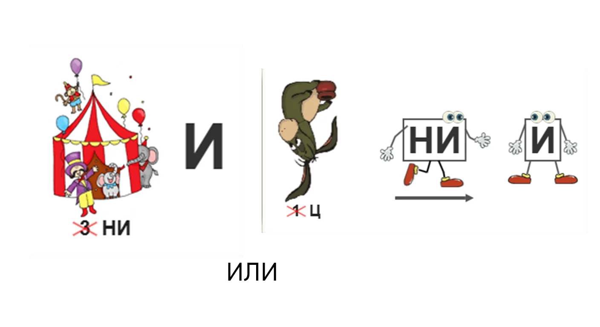
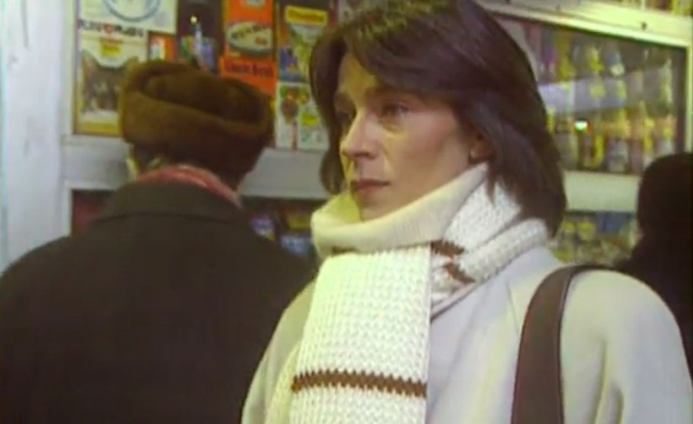
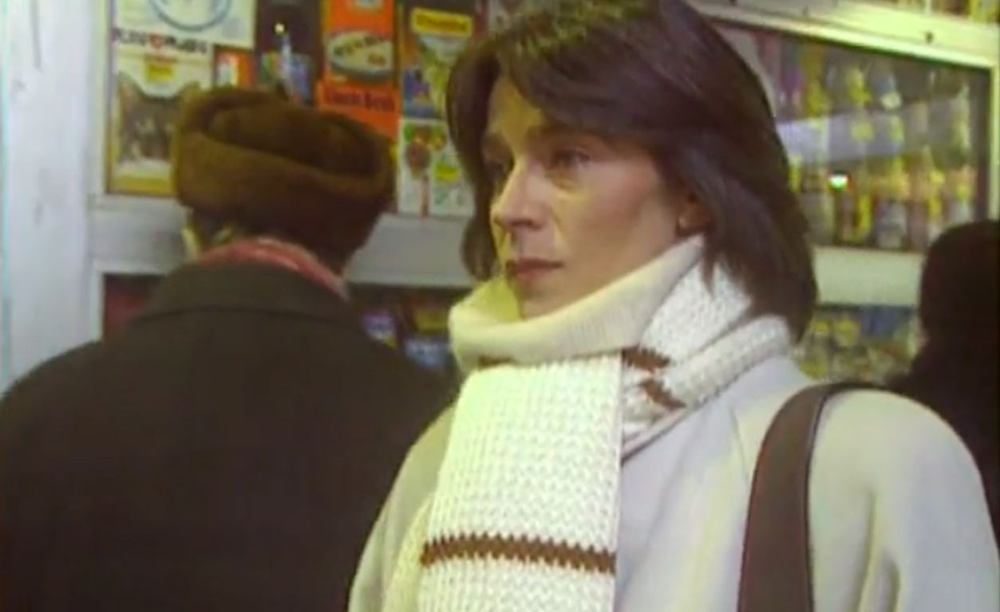

КРАСНОГВАРДЕЙСКИЙ В КИНО
Проверь свои знания о советском кино и знаковых местах съемок!
Вопрос 1/11
Один из этих талантов снялся в фильме «Встретимся в метро» 1985 года в возрасте 26 лет. Кто это?


Какой советский фильм 1985 года о строителях ленинградского метро снимался на Малой Охте?
Фильм «Прорыв» (1986) повествует о трудностях строительства метро. Попробуйте сопоставить карты метрополитена с городами, в которых они находятся.


Скрестив эти два образа, вы получите название известной мелодрамы-трилогии. Что это за фильм?
+

В фильме «Мама вышла замуж» (1969) есть панорамный вид на мост Александра Невского. А как вы думаете, сколько всего мостов в Петербурге?
Вспоминая песню группы «Жуки» «Батарейка», в третьем куплете упоминается имя героя. Такое же название для фильма выбрал Николай Лебедев в 1958 году. О каком фильме идёт речь?
Большеохтинский проспект стал местом съёмки фильма по книге Яна Ларри. Вспомните название этого фильма, используя подсказки.

Фильм «Старший сын» (1975) разошёлся на цитаты. Попробуйте вспомнить продолжение каждой из представленных ниже фраз.
Ты думаешь, я тебя не понимаю? Я ведь тоже был...
Жизнь не прощает тех, кто...
Мы живём, как будто друг друга не знаем... А ведь мы --...
Всё у вас, молодых, легко и просто… А жизнь-то...
На Большеохтинском мосту, помимо "Шерлока Холмса", снимали эпизод ещё одного фильма в 1991 году. Отгадайте его название по ребусу.

На каком кадре изображён фрагмент фильма «Необыкновенные приключения Карика и Вали»?

 

В каком известном советском фильме Большеохтинский мост «сыграл роль» Тауэрского моста в Лондоне?